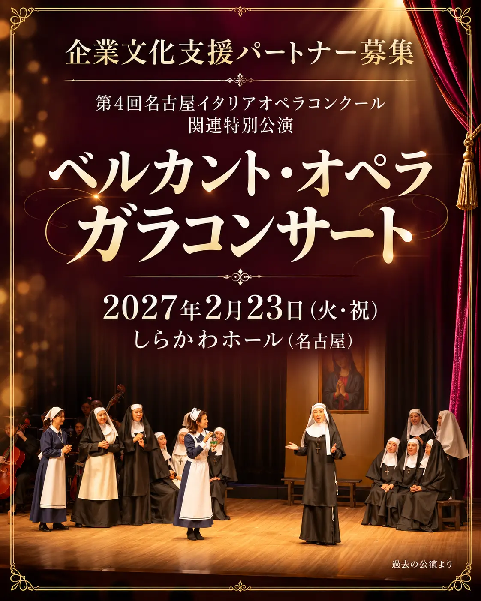
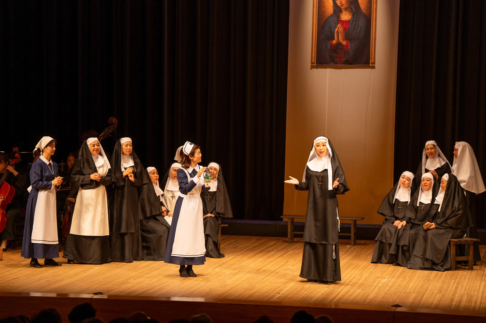
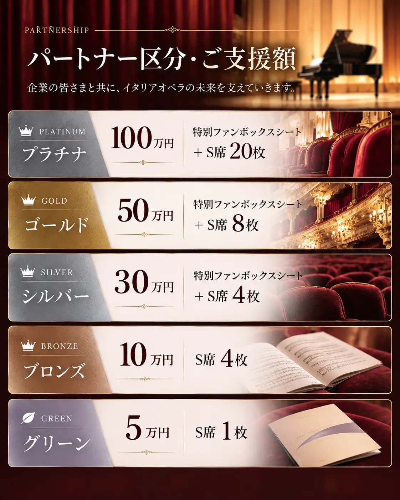

若い才能を、世界へ。
名古屋イタリアオペラコンクール
若手歌手の発掘と育成を通じて、次世代のオペラ界を担う人材を応援します。


CULTURE CONNECTS US
この舞台の感動を、
ともに。
THE SPECIAL STAGE
第4回名古屋イタリアオペラコンクール関連特別公演
ソプラノデジレ・ランカトーレ氏をお迎えして
世界的なソプラノ歌手の歌声を、名古屋・しらかわホールで。オペラの豊かな表現と感動を分かち合う、特別なひとときをお届けします。
OUR VISION
音楽を通じて、人と文化をつなぐ。
私たちが目指すのは、一度のコンサートを成功させることだけではありません。若い音楽家が世界へ羽ばたく機会をつくり、世界で活躍する音楽家を日本に紹介し、イタリアオペラの魅力を次世代へ伝えていくことです。
企業の皆様のご支援が、音楽家の未来を拓き、日伊の文化交流を深めます。文化を育むパートナーとして、この歩みをご一緒しませんか。
WHAT WE DO
名古屋イタリアオペラコンクール
若手歌手の発掘と育成を通じて、次世代のオペラ界を担う人材を応援します。
世界の歌手を迎えるコンサート
世界で活躍する音楽家を日本へ。心に残る舞台を通して、オペラの魅力を届けます。
日本とイタリアの文化交流
両国の音楽家をつなぎ、新たな挑戦と交流が生まれる機会を育みます。
教育・育成事業
イタリアオペラの豊かな伝統と表現を、未来を担う音楽家へ継承します。
THE VALUE OF PARTNERSHIP
 01 / CULTURE
01 / CULTURE若い音楽家の可能性を広げ、芸術文化の発展と国際交流を支える取り組みです。
 02 / CONNECTION
02 / CONNECTIONお取引先、お客様、社員の皆様と。音楽の感動を共有する、特別な交流の機会に。
 03 / COMMUNICATION
03 / COMMUNICATION公式サイトや公演プログラムへの掲載を通して、企業の文化支援活動を伝えます。
※画像はイメージです。

PARTNERSHIP PLANS
本公演を支えてくださる企業パートナーを募集しています。
※ファンボックスの利用人数は6名です。各プランの詳細はお問い合わせください。
A MOMENT TO SHARE
お取引先や大切なお客様をお招きし、上質な音楽のひとときを共有する。特別な鑑賞空間が、芸術文化を通じた新たな交流の機会を生み出します。
ファンボックスのご案内（会場公式） ↗CONCERT TICKETS
OUR JOURNEY
コンクールの開催、国内外の音楽家との交流、教育・育成。
イタリア音楽文化の未来へつながる活動を続けています。
HOW TO JOIN
ご希望のプランや、ご質問をお知らせください。
協賛内容・特典など、詳しくご案内します。
内容をご確認いただいたうえで、お手続きへ進みます。
BECOME A PARTNER
ご協賛やパートナー制度について、
どうぞお気軽にお問い合わせください。
デザイン確認用フォームです。
入力内容は送信・保存されません。